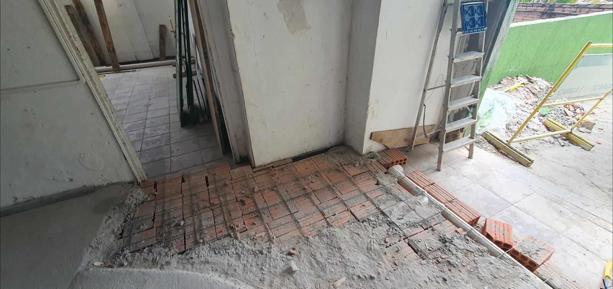
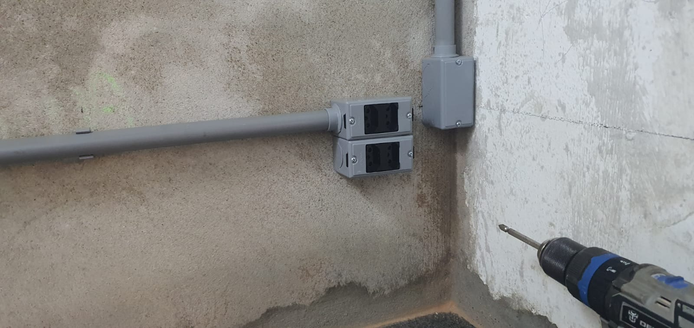
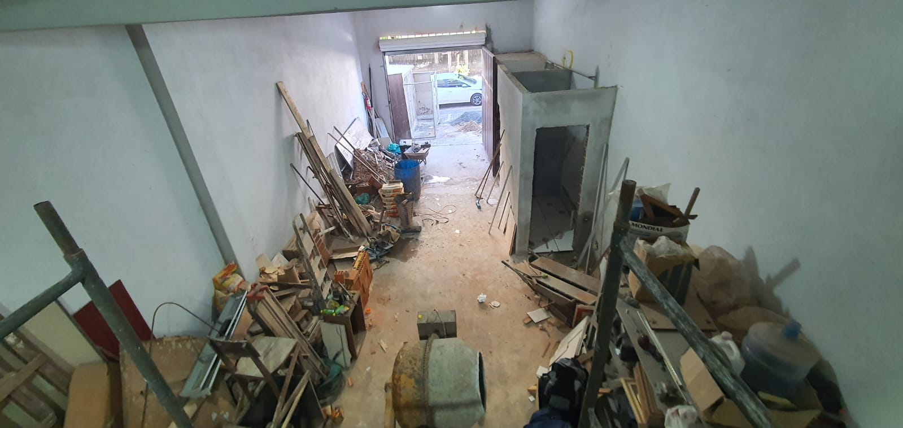
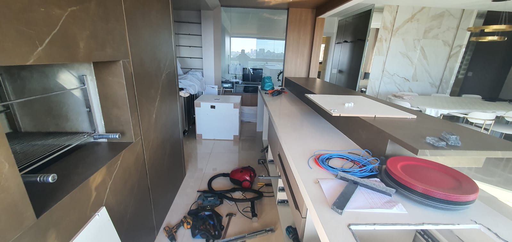
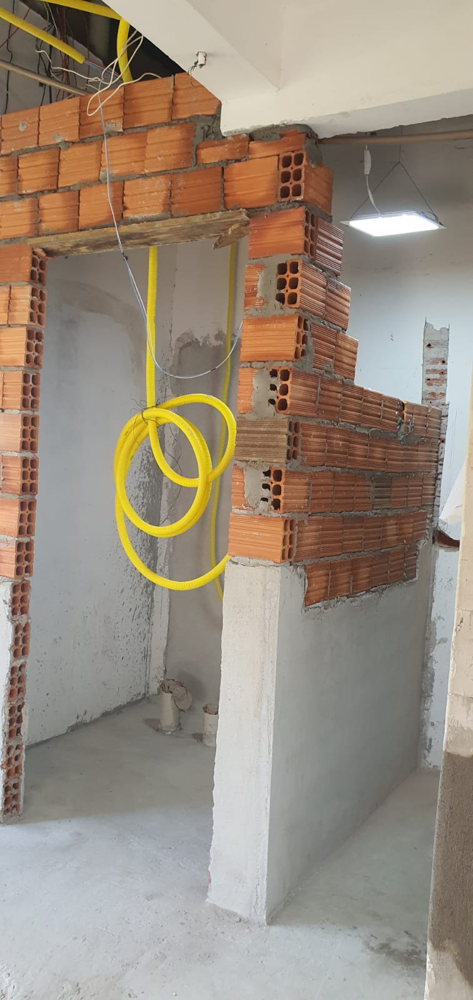

Administração de construções
Documentação, autorizações, acompanhamento diário, planejamento, orçamentos, compras, controle de prazos, materiais e equipes.
Construções, reformas e manutenção
Execução de obras residenciais e comerciais com planejamento, administração, instalações técnicas e acabamento.
Da documentação à entrega
A LLBR organiza prazos, materiais, terceiros, máquinas, autorizações e execução. O foco é reduzir improviso, manter a obra andando e entregar cada etapa com responsabilidade.
Serviços
Documentação, autorizações, acompanhamento diário, planejamento, orçamentos, compras, controle de prazos, materiais e equipes.
Cria ou executa projetos estruturais, arquitetônicos, elétricos e hidráulicos.
Obras gerais, paredes, pisos, banheiros, cozinhas, piscinas, muros, fundações, rampas, calçadas, telhados, fachadas e anexos.
Instalação completa, adequações, tomadas, interruptores, luminárias, LEDs, sensores, disjuntores, cabeamento, 127V/220V e cerca eletrificada.
Água quente e fria, esgoto, pluvial, caixa d'água, bombas, hidrômetros, boias, torneiras, duchas, chuveiros, válvulas e filtros.
Pintura, decks, drywall, gesso, vidros, marmoraria, papel de parede, pisos, revestimentos, soleiras e rejuntes.
Calhas, rufos, telhados, impermeabilização, serralheria, corrimões, portoes, guarda-corpos e estruturas metalicas.
Ar-condicionado, placas solares, limpeza de caixa d'água, internet, roçagem, terraplanagem, descarte, fretes e carretos.
Trabalhos reais
Registros de reformas, alvenaria, elétrica, hidráulica, telhados e acabamentos usados como base visual do site.






Evolução visual
Seleção das fotos enviadas para mostrar contraste de ambientes em etapa inicial e após intervenção, reforçando o perfil de site de conteúdo com contexto real de execução.


.jpeg)
Processo
Entendimento da demanda, documentação, autorizações, escopo e prioridades.
Orçamento, materiais, prazos, terceiros, máquinas, caçambas e fluxo de trabalho.
Acompanhamento diário, controle das etapas e adequações durante a obra.
Lista completa
A lista abaixo foi organizada a partir do documento de serviços para folders e cartões.
Projeto do site
O desenvolvimento deste site está vinculado ao GitHub de Lucas Belucci Bellini. Dúvidas, bugs e erros devem ser registrados no repositório do projeto.